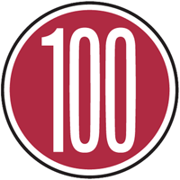
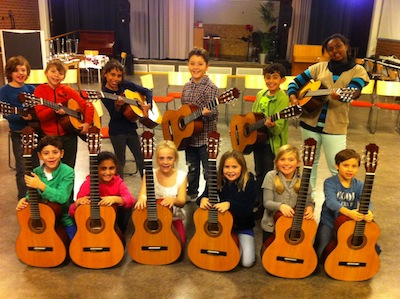

Alt-texter
och hur man utformar dom
Av: Jenny Smedman WP14 Linnéuniversitetet
Alt-text/Alternativ text
Ett alternativ för den som av olika anledningar inte kan se en bild. Syftet med alt-texten är att den ska kunna bli uppläst och ändå kunna tillgodogöra användaren det kommunikationvärde som finns i den bild som inte kan ses.
Hur utformar man bra alt-texter?

Beskriv bilden
Undvik att skriva att det är en bild, det sköter webbläsaren själv. Beskriv istället vad bilden föreställer och stämningen samt eventuellt syfte.
Inte mer än 100
En alt-text bör inte innehålla mer än hundra tecken.
Ett exempel
Denna bild kan t.ex ha alt-texten "Ett gäng glada musikelever med sina gitarrer".
Sökoptimering
Att utforma bra alt-texter gör sidan användarvänlig vilket också ser till att din sida hamnar högre upp i sökmotorernas söklistor.
Lite om bildtext
Alt-texter ersätter aldrig bildtexter. Bildtexter är bra att använda så att alt-texterna inte blir överflödiga.
Ska man alltid använda en Alt-text?
Alla bilder ska alltid ha alt-texter. Men fyller bilden ingen informativ funktion så är det bättre att vara tyst. Man kan då istället sätta alt="", alltså en tom alt-text.